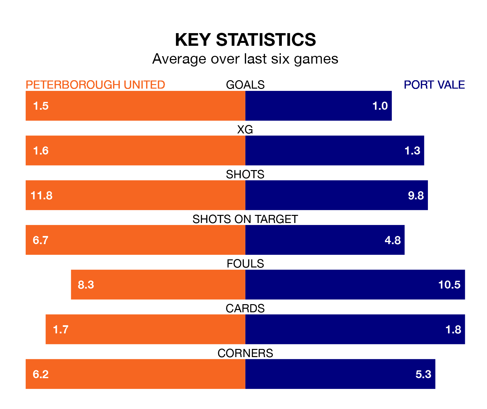

Peterborough United are heavy favourites to keep all three points at home in Tuesday's late kick-off against Port Vale.
The Posh, who sit fifth in EFL League One with 31 games played, are priced at 1.5 to seal victory at the Weston Homes Stadium.
Sitting 16 places and 25 points behind them in the table, Vale are 5.5 to win with *Betting Company*, while the draw is at 4.1.
With 59 goals in 31 games so far this season, Peterborough are the league's highest scorers with 1.9 goals per game. And they are conceding at an average rate, letting in 39 goals at a rate of 1.3 per game.
Vale, meanwhile, are below average scorers, with 1.0 goal per game, compared to a league average of 1.3. They have conceded 1.6 goals per game.
United are in mixed form in EFL League One, with two wins and a draw from their last six games.
With no wins and two draws over that period, the Valiants's form is worse – they have taken two points from 18, compared to the Posh's seven.
In the last 10 years, Peterborough and Vale have played each other on 10 occasions. Peterborough won five of them, Vale two, and they drew three times.
On average, the Posh scored 1.8 goals and the Valiants 0.9 in those matches.
Their last meeting was on October 24, when Peterborough won 1-0 away.
With Nicholas Bilokapic between the sticks, the home team can rely on one of the league's safest pair of hands. He has kept 10 clean sheets in his 27 appearances this season in EFL League One.
In the visitors' net, Connor Ripley has seven clean sheets in 29 games. He has conceded a goal every 65 minutes, 20% more often than the 76 minutes between goals for Bilokapic.
Peterborough's last match was on Saturday, a 5-2 loss against Wycombe Wanderers, with David Ibukun Ajiboye and Ricky Jade-Jones getting the goals for the Posh.
Vale drew 2-2 with Stevenage last time out, also on Saturday, with Funso-King Ojo and Terence Owen Vancooten (own goal) on the scoresheet.
Updated: 13:30 (UTC), 12/02/24